Scrum
introduction
My name is Paval Miatlitski
Christian, Belarusian, father of three kids.
Division of labor
Medieval craftsmen
Medieval craftsmen united in corporations (сесh, zёсh, zёсhе, цэх)
- Doing by hands
- Think about starting crude, production, trade by themselves
Manufactures
Venitian Arsenal
- Doing mostly by hands
- Division of labor
- Worries about starting crude, production, trade etc. are delegated to others
Factories
- Machinery and Automation
- Extreme division of labor
- and Karl Marx
Happy Birthday!
Modern times

IT management
Gantt chart
(invented at 1910-1915)
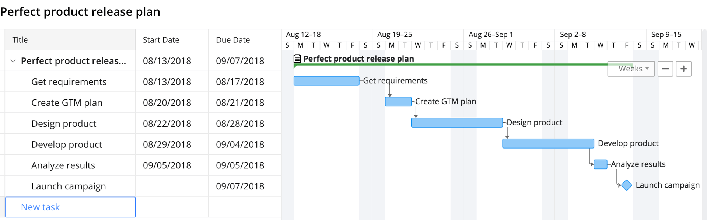They thought about the product-development as it's indivisible, impartible, integral whole
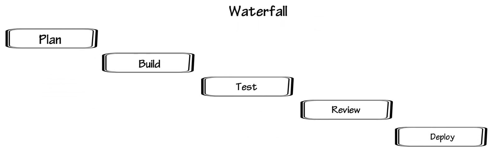You have to go back and other processes stop
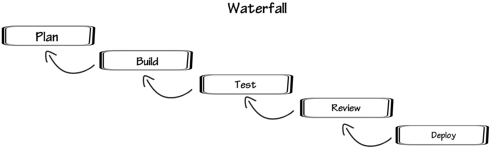And wait
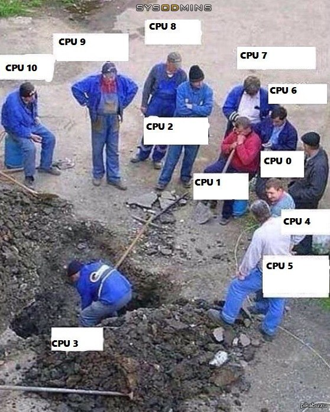Or even worse. You have to do over and over again on every correction
House MD
“Work smart, not hard.”
Scrum inventors

Scrum is agile-based methodology
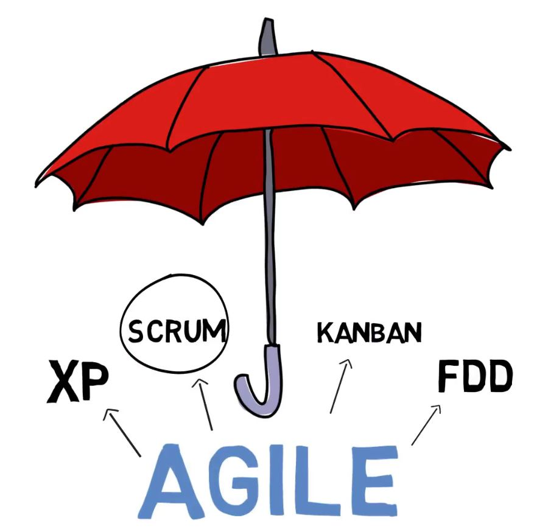Agile mindset
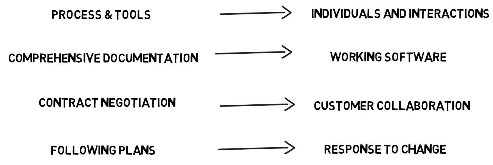For more details visit their manifesto page
Roles (Performers)
- Product owner (PO)
- Scrum master (SM)
- Team
Product owner
- Product owner collects user stories
Product owner
- Product owner forms Product Backlog
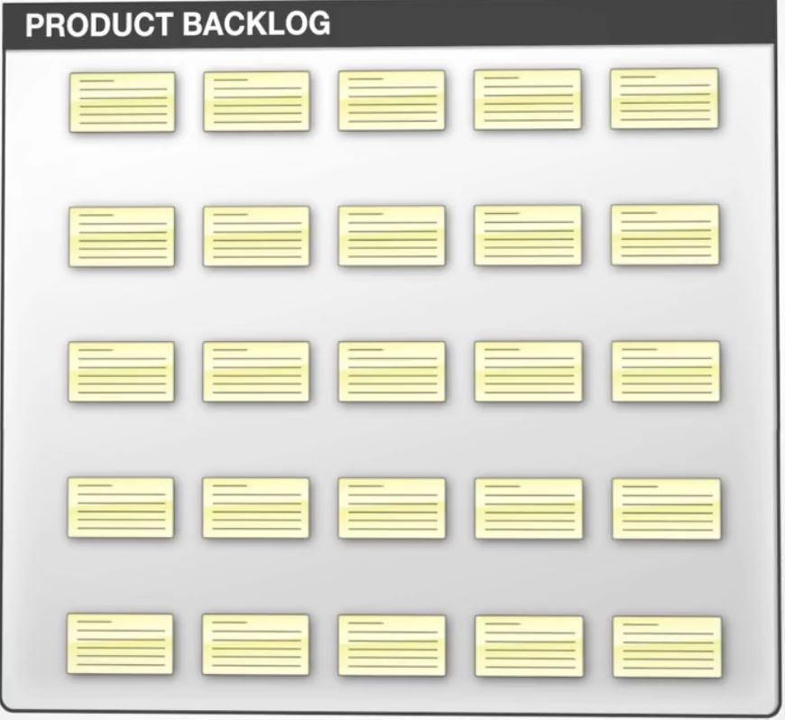
PO, SM and the team
- Product owner meets the team and the scrum master on a Sprint Planning and they alltogether form Sprint (Release) Backlog.
Division of product and development into tasks
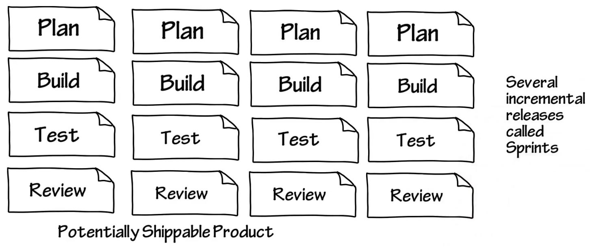Sprints
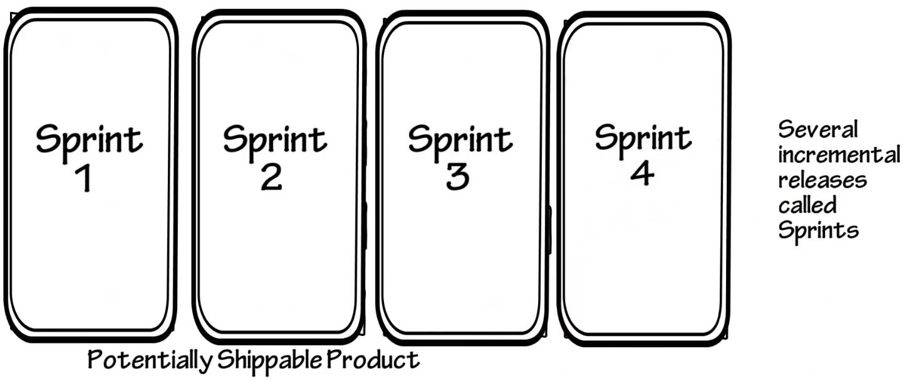4 mandatory ceremonies
- Sprint planning
- Daily Scrum
- Sprint Review
- Sprint Retrospective
Burndown chart
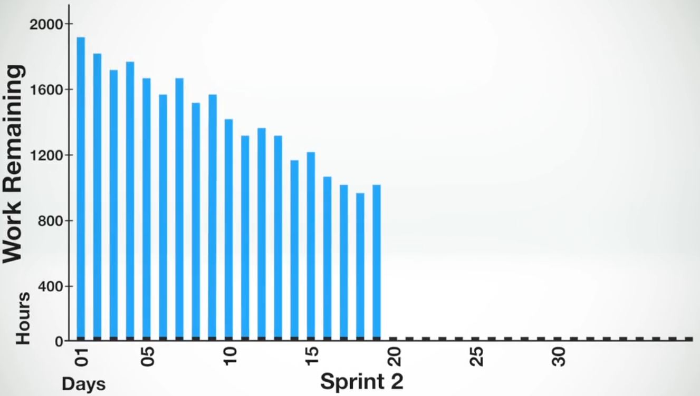Burndown chart
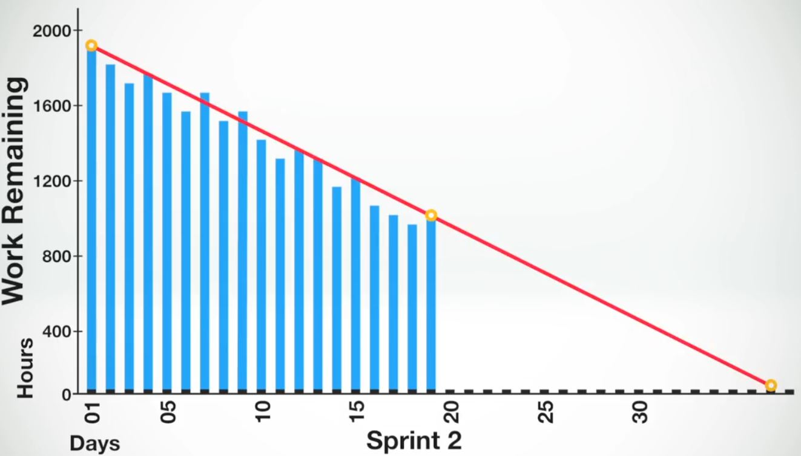Main goals
- Re-establish lost communication and collaboration between developers and customer
- Maintain the process of continuous delivery, as frequently as it could be
Software Craftsmanship
Software Craftsmanship Manifesto
Brings us to these times.